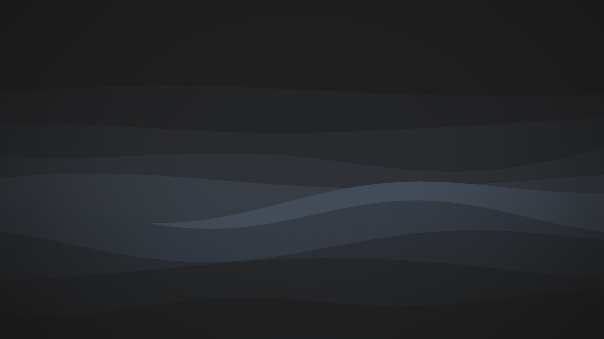
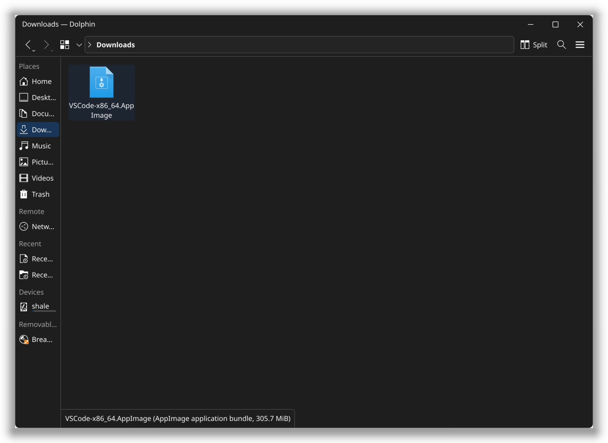
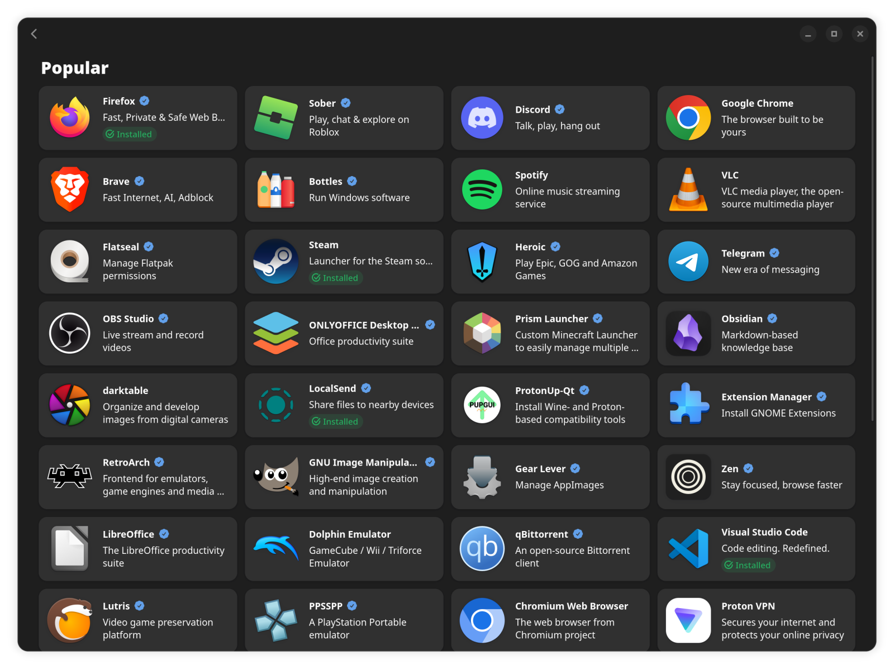
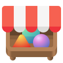
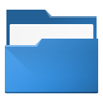
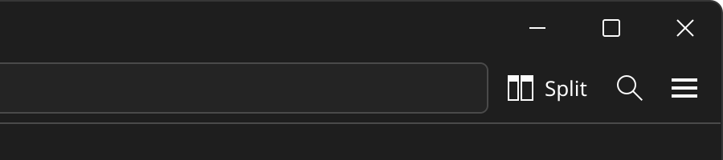
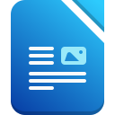
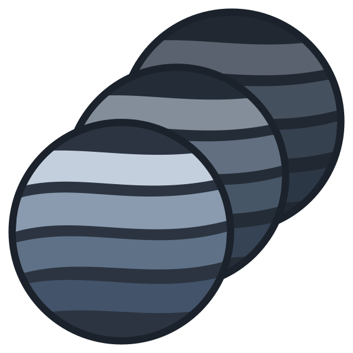

Familiar from day one
If you've used Windows, you'll feel at home
The start menu sits in the corner, your apps live on the taskbar, and every window has minimize, maximize and close right where you expect them.
Shale is a free alternative to Windows and macOS. It's easy to use, quick to set up, and comes with everything you need.
Free forever. No account, no ads.





Familiar from day one
The start menu sits in the corner, your apps live on the taskbar, and every window has minimize, maximize and close right where you expect them.

Ready to go
Browse, write, watch, look through photos and share files the moment you log in.

LibreOfficeOpens Word and Excel filesThousands more
Bazaar has thousands of free apps and games. Find one, click Install, and it's in your menu. No websites to search, no installers to click through.
Steam, Discord, Spotify and OBS are all there.
Peace of mind
Shale saves a copy of your system every day and before every update. If something stops working, put it back the way it was. Your photos and documents are never touched.

One click updates your whole computer and every app, with a progress bar and no password.
No ads, no tracking and no account to sign up for. Your computer is yours.
Shale costs nothing to download, use or share, and it never will.
Try it from a USB stick first. Install it when you're ready.
Get the Shale file from the download page.
Use the free app balenaEtcher: pick the file, pick the stick, click Flash.
Restart with the stick plugged in. Shale opens straight away.
Click Install, choose your language, Wi-Fi, name and password.
What you need: a USB stick of 8 GB or more, an internet connection while installing, and a 64-bit PC.
Back up first: installing replaces everything on the drive you pick, including Windows.
Linux is free software that runs your computer, the same job Windows or macOS does. It powers most of the internet and every Android phone. Shale is a version of it made to be easy and calm for everyday use.
Yes. Shale is free to download, use and share. No subscriptions, no ads and no account.
No. Installing, updating and adding apps all work with normal buttons and windows.
Most popular apps have a free equivalent in Bazaar, and many Windows games run through Steam. Some Windows-only programs, like certain Adobe apps or games with strict anti-cheat, don't work. If you rely on one of those, check before you switch.
Yes, by reinstalling Windows from a Windows USB stick. Shale's snapshots fix problems within Shale, but they can't bring back a system that was replaced, so keep a backup of your files.
Shale runs on most 64-bit PCs. AMD graphics work right away, and Intel and NVIDIA graphics are set up for you during install. The easiest way to find out is to start from the USB stick and try it.